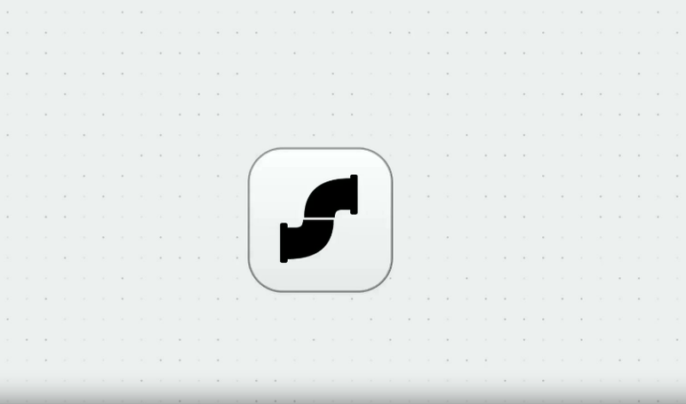

TUTORIAL
Depois de toda call sobra sempre a mesma tarefa chata: escrever o resumo.
Um app lançado essa semana faz isso sozinho.

@opus.automacoes
O QUE É
O app se chama Screenpipe.
Ele grava o que acontece na sua tela e o áudio da sua reunião, e guarda tudo local no computador, sem mandar pra nuvem.
Quando a call termina, ele escreve o resumo sozinho e atualiza ferramentas como o Notion.
Foi um dos posts mais comentados do Hacker News essa semana, com 87 votos em poucos dias.
@opus.automacoes
PASSO 1
Baixar e instalar o Screenpipe.
O download é gratuito, direto no site oficial, e instala como qualquer programa comum no seu computador.
Depois de instalado, ele já começa a rodar em segundo plano, pronto pra gravar tela e áudio quando você quiser.
Existe também uma versão paga, mas o teste inicial não custa nada.
@opus.automacoes
PASSO 2
Decidir o que não vai ser gravado.
Antes de qualquer reunião, entra nas configurações e escolhe quais aplicativos ficam de fora da gravação, tipo o app do banco ou uma conversa pessoal no WhatsApp.
Os dados inteiros ficam guardados só no seu computador, nada sobe pra nuvem.
Esse passo é o que faz o app ser seguro pra usar todo dia.
@opus.automacoes
PASSO 3
Deixar rodando numa call de verdade.
Não precisa fazer nada diferente na reunião, só abrir o Screenpipe antes de entrar na chamada com o cliente e continuar a call normal.
Ele grava o áudio e a tela em segundo plano, sem interromper nada nem pedir atenção no meio da conversa.
O trabalho pesado só aparece depois que a call termina.
@opus.automacoes
O RESULTADO
Assim que a call acaba, o resumo já está pronto.
O Screenpipe escreve os pontos principais da conversa sozinho e atualiza direto uma ferramenta como o Notion, sem você copiar e colar nada.
A tarefa manual que sempre vinha depois de cada reunião passa a acontecer sozinha, enquanto você já está na próxima call ou no próximo cliente.
@opus.automacoes
RESUMO
Salva esse tutorial pra configurar seu resumo automático de reunião.
Vale pra quem faz call com cliente toda semana e ainda perde tempo escrevendo anotação depois.
O Screenpipe apareceu essa semana entre os mais comentados do Hacker News.
@opus.automacoes